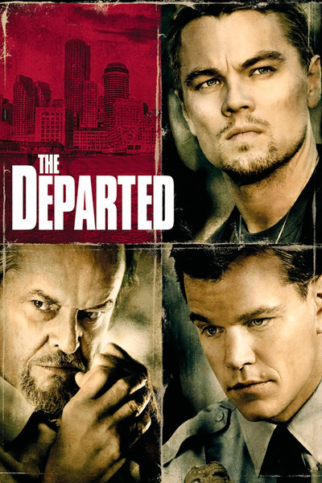

Przem Szkwarek
Computer Programmer
Polish Born, Vancouver raised refugee extraordinaire. Graduated from the Sauder School of Business at the Univercity of British Columbia. Learning to code at Le Wagon Montreal - Batch #125
See for yourself |
Birdman
|
|  |
The DepartedTwo just-graduated officers from Massachusetts State Police Academy follow opposite sides of the law: Billy Costigan is assigned to work undercover with the Irish mobster Frank Costello to get evidence to arrest him. His true identity is known only by his superiors Dignam and Oliver Queenan. |
Lord of the Rings:
|
About this Page
This page has been coded during the FullStack program @LeWagon. That was probably the best experience of my entire life.